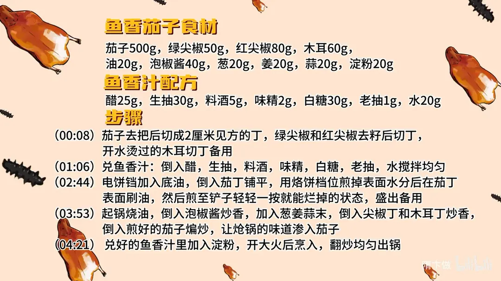

鱼香茄子
隋卞一做。茄子 500g 切 2 厘米见方的丁，电饼铛用烙饼档煎掉表面水分，煎到一按就烂；泡椒酱、葱姜蒜炝锅后下尖椒、木耳，最后烹入醋 25g、糖 30g 的鱼香汁。
原视频：https://www.bilibili.com/video/BV1Eq421P7WH
食材
茄子、绿尖椒、红尖椒 等 17 样
| 类别 | 用料 | 用量 |
|---|---|---|
| 主料 | 茄子 | 500g |
| 配料 | 绿尖椒 | 50g |
| 配料 | 红尖椒 | 80g |
| 配料 | 木耳 | 60g |
| 配料 | 葱 | 20g |
| 配料 | 姜 | 20g |
| 配料 | 蒜 | 20g |
| 调料 | 油 | 20g |
| 调料 | 泡椒酱 | 40g |
| 调料 | 淀粉 | 20g |
| 鱼香汁 | 醋 | 25g |
| 鱼香汁 | 生抽 | 30g |
| 鱼香汁 | 料酒 | 5g |
| 鱼香汁 | 味精 | 2g |
| 鱼香汁 | 白糖 | 30g |
| 鱼香汁 | 老抽 | 1g |
| 鱼香汁 | 水 | 20g |
步骤
- 切配：茄子去把后切成 2 厘米见方的丁；绿尖椒和红尖椒去籽后切丁；开水烫过的木耳切丁备用。
- 兑鱼香汁：倒入醋、生抽、料酒、味精、白糖、老抽、水，搅拌均匀。
- 煎茄子：电饼铛加入底油，倒入茄丁铺平，用烙饼档位煎掉表面水分，再在茄丁表面刷油，煎至铲子轻轻一按就能烂掉的状态，盛出备用。
- 炝锅：起锅烧油，倒入泡椒酱炒香，加入葱姜蒜末，倒入尖椒丁和木耳丁炒香，再倒入煎好的茄子煸炒，让炝锅的味道渗入茄子。
- 烹汁出锅：兑好的鱼香汁里加入淀粉，开大火烹入，翻炒均匀出锅。
讲解要点
难度：★★☆☆☆（难点是鱼香汁的酸甜比例和茄子的煎制火候）
为什么这么做
- 切丁不切条：丁的表面积比条大，吸味更足，一口一个也好夹；但太小一遇热就缩成一点点，所以定在 2 厘米见方。
- 配菜按「条配条、丝配丝、丁配丁」：形状一致才能受热一致，口感也统一。
- 用电饼铛代替油炸：烙饼档的温度接近油炸温度，能快速把茄子表面的水烙掉，省油又不油腻。
- 先烙后刷油：茄子表面一开始有水分，烙一会儿表面干了再刷油，油才挂得住、不滑。
- 看电饼铛的缝判断水分：加热让水分流失，缝隙消失就说明表面水分基本干了，可以刷油了。
- 鱼香汁先兑好、最后勾芡：糖醋比例是鱼香的骨架，提前兑好一次烹入味才稳；淀粉临下锅才加进去，才不会沉淀。
- 茄子在炝锅之后下：先让泡椒、葱姜蒜的味出来，再下茄子煸炒，味能渗进茄子里。
容易翻车
- 茄丁别切太小，2 厘米见方；太小一遇热就缩、还容易碎。
- 电饼铛别一开始就刷油，等表面水分烙干再刷，否则油挂不上。
- 泡椒酱要炒香出红油再下葱姜蒜，火太小出不来味，火太大容易糊。
- 汁要大火一次烹入，小火慢慢倒容易「澥」，芡也挂不住。
原片尾卡

原片文案
AI 字幕校准稿
你们最爱的下饭菜来了，鱼香茄子。这个茄子一掐很嫩很嫩，上面那个蒂不用去，直接切就行。然后把它切成丁，大小在 2 厘米见方——太小了不行，一遇热就缩，缩成一小不点了。
长条形的鱼香茄子还得「忒儿喽」着吃，咱们这个切成丁，一口一个方便。切点辣椒，不要籽，切成丁；再来点木耳配菜。颜色调配讲究，条配条、丝配丝、丁配丁。
鱼香茄子最重要的就是这个鱼香汁，我给你们对好，你们不用记，全都放在片尾：醋、生抽、料酒、味精、白糖，再来点老抽，还要兑点水。
好多观众说咱们现在越来越严谨，都是对着秤来的。其实大家不知道的是，我们每一期都会称，只不过是现在把它放到台前，防杠。
因为是家庭版本，很多人不想在家里用油炸，再教你们一个小秘方：电饼铛。这边放点底油，把茄子放进去铺平，就用烙饼那个档，然后就不用管它了。电饼铛的温度也够，跟油炸差不多一个温度，能达到油炸的效果，又省油，而且吃着不油腻，省时省力。
那为什么不一开始就刷油？一开始上面有水分，稍微放一放，表面有点干燥了，这时候再刷点油就更好。电饼铛刚开始中间还有缝，通过加热水分流失，没有缝的时候应该就差不多了。
这样就可以了，铲子轻轻一按烂掉了就行，盛出来。锅里放底油，放泡椒，下葱姜蒜末，再放辣椒、木耳——木耳是拿开水烫过的——放入茄子煸炒一下，让这个炝锅的味道渗到茄子里面去。
兑好的汁里加上淀粉，这会儿要开大火把汁放进去，定一下味儿，出锅。
知道他下饭，但没想到他这么下饭。我觉得把茄子从条变成丁，它吸味吸得更足了，一口一口吃着好方便，又方便又爽。调味就不用说了，鱼香口非常好吃，无敌下饭菜，两勺就能干一碗米饭。
这个菜特别方便，比如说自己下班回家了，我感觉这个菜十分钟就差不多，因为电饼铛很快，一般三分钟搞定，剩下十多分钟的事。再有这个葱姜蒜，你要按照我的比例放，姜蒜适当适量。大家试试吧，这个比例都是准确的。